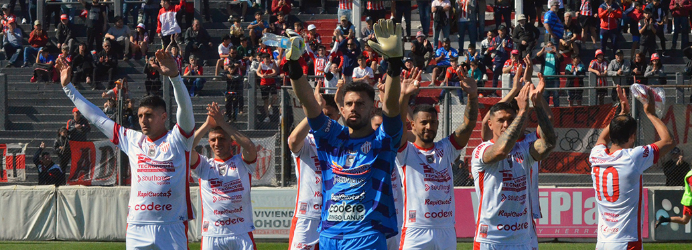

Tras el empate contra Banfield, Talleres busca ascender
El estadio Florencio Sola fue testigo de un emocionante empate 1-1 entre Banfield y Talleres de Escalada, en un partido cargado de intensidad, tensión y oportunidades para ambos equipos. Este clásico del sur, que siempre promete emociones, no fue la excepción, con momentos de brillantez tanto en defensa como en ataque, y con varias figuras destacadas. Desde el primer minuto, Banfield, comandado por su capitán y referente en el mediocampo, Julián Palacios, salió decidido a imponer condiciones. Entre Juan Álvarez y Milton Giménez en el frente de ataque, el equipo local puso en aprietos a la defensa de Talleres. A los 32 minutos, tras varios intentos fallidos, llegó la apertura del marcador para Banfield. Un córner ejecutado por Julián Palacios encontró la cabeza de Milton Giménez, quien conectó un potente remate que dejó sin opciones al arquero de Talleres. La afición local estalló en júbilo, confiando en que el equipo mantendría la ventaja.  Con el paso de los minutos, la tensión aumentaba en ambos lados. Los técnicos realizaron cambios buscando revitalizar el ataque: Banfield incorporó a Santiago Cruz para sumar velocidad en la delantera, mientras que Talleres apostó por el ingreso de Rodrigo Paredes, un delantero fresco que estuvo cerca de marcar en los últimos minutos. El pitazo final marcó el 1-1 definitivo, dejando un sabor agridulce en ambos equipos. Banfield, que dominó por momentos, no pudo concretar sus oportunidades, mientras que Talleres celebró haber rescatado un punto en una cancha complicada, pero sintió que el triunfo estuvo cerca. Con este resultado, Banfield y Talleres de Escalada suman un punto más en la tabla, pero la rivalidad entre ambos equipos sigue tan viva como siempre. El empate en este clásico del sur quedará en la memoria como un duelo cargado de emociones y un espectáculo digno para los hinchas.
Informe: Ariel Cappelletti
Fotografía Gentileza Marcelo White
24 de septiembre de 2024